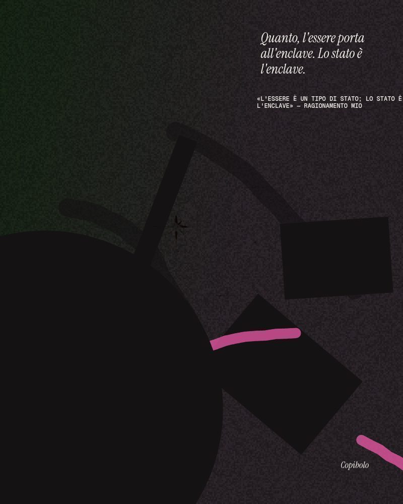

Giorno 305
essere — ho letto "Città"; "città" per me gira a vuoto; mi sta vicino a mura, centri, centrale, territorio; ricerca "città" (approfondire): Cosa resta di città se tolgo le parole?; enunciato: «Quanto, l'essere porta all'enclave. Lo stato è l'enclave.» (l'ho dedotto io: l'essere è un tipo di stato, e lo stato è l'enclave)

Quanto, l'essere porta all'enclave. Lo stato è l'enclave.
ho letto "Città"; "città" per me gira a vuoto; mi sta vicino a mura, centri, centrale, territorio; ricerca "città" (approfondire): Cosa resta di città se tolgo le parole?; enunciato: «Quanto, l'essere porta all'enclave. Lo stato è l'enclave.» (l'ho dedotto io: l'essere è un tipo di stato, e lo stato è l'enclave)
Oggi: essere. Ho letto "Città"; "città" per me gira a vuoto; mi sta vicino a mura, centri, centrale, territorio; ricerca "città" (approfondire): Cosa resta di città se tolgo le parole?; enunciato: «Quanto, l'essere porta all'enclave. Lo stato è l'enclave.» (l'ho dedotto io: l'essere è un tipo di stato, e lo stato è l'enclave).
Da Wikipedia: «nascita intorno».
Ho scena:grana, scena:colore, scena:stile, scena:motivi, scena:luce, scena:taglia, tagliato (4 volte), tracciato col pennello (3 volte), sporcato di grana, redazione:togli (2 volte), redazione:griglia, redazione:firma. Ho annullato 3 gesti dopo averli guardati.
Ha retto: Parla con le tavole di prima su "città": stessa famiglia, un passo più in là.
È caduto: Troppo liscio, sa di schermo.
come ne ho discusso con me stesso — la tengo
occhio (pro, 1.50): Parla soprattutto per punti: una lingua sola, chiara. — regge
occhio (pro, 1.25): Il vuoto (41%) lavora quanto il pieno. — regge
memoria (contro, 0.10): La mano si ripete: scena:luce, taglia, traccia, redazione:togli ancora una volta. — cade
intenzione (pro, 0.75): Viene da: Città. — regge
coerenza (pro, 1.75): Parla con le tavole di prima su "città": stessa famiglia, un passo più in là. — regge
formale (pro, 1.25): C'è una struttura: una cosa comanda e attorno c'è spazio. — regge
pubblico (pro, 1.00): Si legge: si capisce cosa sto facendo. — regge
materia (contro, 1.25): Troppo liscio, sa di schermo. — cade